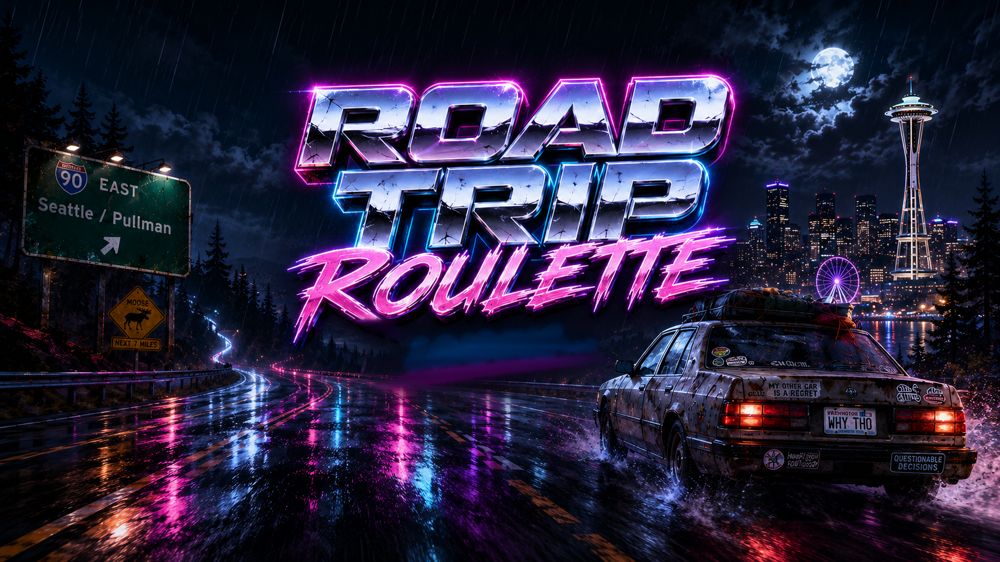

You're a broke musician with an opportunity to change everything. Pack your gear and hit the road with 10 soundtracks, each to keep you entertained and awake. Stay hydrated and fed while the Washington roads try to eat you.
Manage fuel, hunger, bladder, alertness, engine heat, and the law. Take missions for cash and rep. Get busted, crash, or roll into Pullman a legend — then spin it again.
Pick your scene and it picks your car: a phonk VIP Sedan, a country Mud Truck, an EDM Laser Supercar. Every genre drives, earns, and breaks differently — and brings its own original soundtrack.
Seattle, the Snoqualmie Pass snow, the Vantage crosswinds, the empty WA-26 dark, the Palouse hills — 19 real towns to stop in and refuel, repair, and take jobs.